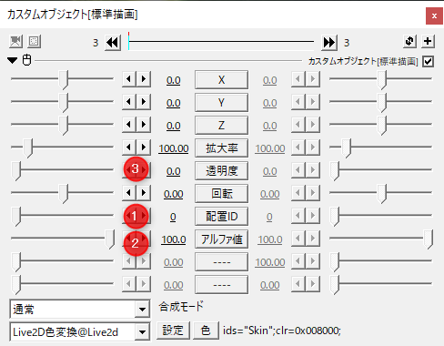
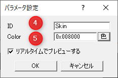
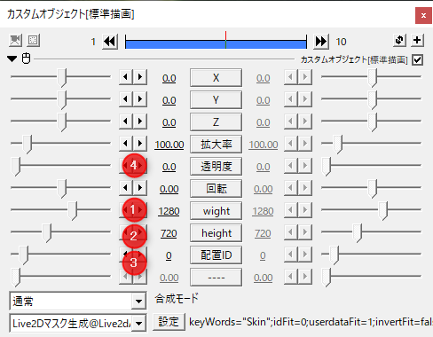

特殊効果について
Live2D Drawer for Aviutl では描画するArtMeshに対して追加の描画効果を指定できます。
指定ではArtMesh単位で行う場合と、ユーザーデータで指定する2つの方法が指定できます。
基礎となるユーザーデータ
Live2D Drawer for Aviutl ではArtMeshに付与されるユーザデータを利用した指定方法を利用できます。
改行で区切られた文字列で認識します。
https://docs.live2d.com/cubism-editor-manual/userdata/
コマンド
色変換

| 番号 | 要素名 | 説明 |
|---|---|---|
| 1 | 配置ID | パラメータを操作するモデルが配置されている番号を指定します |
| 2 | 上書きアルファ値 | ArtMeshの描画のアルファ値を上書きする値を指定します。 |
| 3 | 透明度 | 色の適用の割合に影響する。 |

| 番号 | 要素名 | 説明 |
|---|---|---|
| 4 | ID | UserDataに含まれるIDで指定されます。 |
| 5 | Color | 描画に乗算される色を指定します。 |
マスク生成
※このオブジェクトは描画のあとに使用するようにしてください。

| 番号 | 要素名 | 説明 |
|---|---|---|
| 1 | Width | 用意されるマスク画像の画像バッファの幅のサイズを指定します。 |
| 2 | Height | |
| 3 | 配置ID | モデルが配置されている番号を指定します |
| 4 | 透明度 | マスクの不透明度を指定します。 |

| 番号 | 要素名 | 説明 |
|---|---|---|
| 5 | キーワード | 対象指定用の文字列を入れます。 |
| 6 | idと照合する | チェックが入っているとき、ArtMeshのID名とキーワードが一致するときにマスクが描画されます。 |
| 7 | UserDataと照合する | チェックが入っているとき、UserDataのIDの一つとキーワードが一致するときにマスクが描画されます。 |
| 8 | 照合を反転して解釈する | 上記条件を反転して解釈します。 |
| 9 | 照合しなかった要素は描画をスキップする | 対象外のArtMeshが上に被さらないようにマスクを描画します。 |